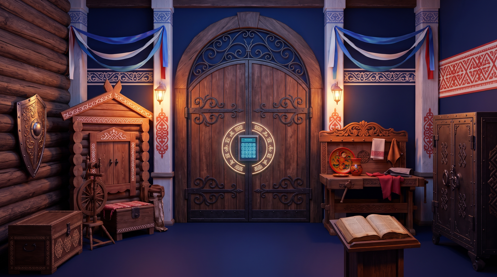

Невский проспект — мост культур и конфессий
Санкт-Петербург объединяет более 130 национальностей. На Невском проспекте мирно соседствуют храмы разных конфессий. Ваша экспедиция начинает путь отсюда: бросьте экспедиционный кубик, чтобы определить условия диалога и получить доступ к первой развилке!
Нажмите для броска: определит сложность ситуации
РАСШИФРУЙТЕ ТАЙНОЕ СЛОВО
Вы прошли пять ключевых узлов России от берегов Невы до Байкала и вернулись в Институт экономики и управления Герцена. Вы собрали 5 скрытых буквенных ключей.
Какое слово из пяти букв обозначает личную лепту, созидательное участие и долю каждого народа в нашем общем культурном наследии?
СЛОВО РАЗГАДАНО: «ВКЛАД»
Единство в многообразии доказано на практике! Каждый народ вносит свой неоценимый вклад в общую культуру, а вы успешно завершили методический квест.
1. Откройте виджет AI-Хранителя Традиций в правом нижнем углу.
2. Отправьте ему пароль ВКЛАД.
3. Получите прямую ссылку на репозиторий GitHub с кодом этой игры, промпты и методические руководства ФИП!